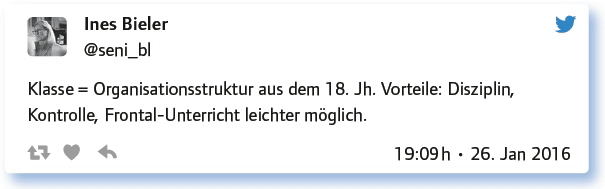
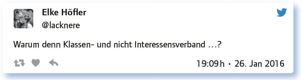
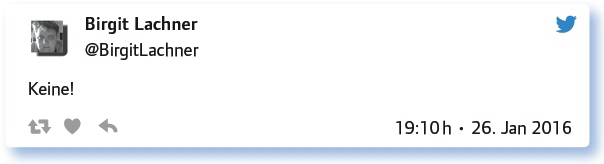
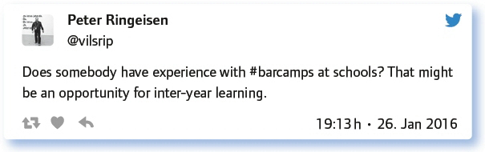

von Ines Bieler
Die Bildungsdebatte in unserer Gesellschaft kommt voran. Forderungen nach einer Bildungsreform werden lauter, Meinungen, Ansichten und Vorschläge immer vielfältiger. Es wird vieles diskutiert und, das ist auch das Vorrecht jedes Reformansatzes, manches in Frage gestellt. Sowohl die Organisationsformen des Lernens, classroom management, als auch die Notengebung werden auf ihren Mehrwert für den Bildungsprozess betrachtet.
Die Vorstellungen von Schule in einer digitalen Gesellschaft gehen weit auseinander. Eins ist sicher: So bleiben kann Schule nicht, wenn sie Menschen auf zukünftige Herausforderungen vorbereiten will. Und dies ist hier nicht auf Inhalte, sondern auf Struktur und Organisation von Schule bezogen. Schule ist zuerst ein Ort zum Lernen. Wie ist dieser Lernort organisiert? Wenn man durch deutsche Schulen geht, sieht man Räume, Klassenstrukturen und Lernszenarien, die noch aussehen wie vor 20, 30 oder 50 Jahren. Das ist alles andere als förderlich, um eine Entwicklung Richtung Zukunft auf den Weg zu bringen.
Anfang des Jahres 2016 wurde beim #EdchatDE diskutiert und gefragt, ob Klassenstrukturen noch in die heutige, vernetzte Gesellschaft passen oder nicht. Ein Thema, das nach wie vor spannend diskutiert wird.
Ausgangspunkt der Diskussion ist die Bestandsaufnahme:
Klassenstrukturen in der Schule – wieso gibt es das und warum macht das Sinn?
Das Hauptargument für die traditionelle Struktur ist also die Organisation der Unterrichtsabläufe in althergebrachter Gebäude- und Schulstruktur. Dies sollte aber den Erfordernissen, die sich in rasantem Tempo ständig weiterentwickeln, angepasst werden.
Man hört den bedauernden Unterton. Aber gebäudetechnische Voraussetzungen lassen sich nicht einfach ignorieren.
Nicht alles ist schlecht. Feste Orte haben auch Vorteile, denn sie können das Zusammengehörigkeitsgefühl festigen. Und Klasse bedeutet eben nicht nur Klassenraum, sondern auch Lerngruppe.
SuS mit ähnlichen Interessen lernen gemeinsam, das fördert das Gemeinschaftsgefühl.
Als feste Peergroup für Lernende und überblickbare Gemeinschaft macht eine Klassengemeinschaft Sinn.
Klassenstrukturen bieten Übersicht und geben den Schülern Routine.
Soziale und Team-Kompetenzen sind schwer alleine anzueignen.
So einfach, wie es sich am Angang anlässt, ist die Sache dann aber doch nicht. Sobald man sich der Frage nach der Definition der Lerngruppe bzw. Klasse zuwendet, tauchen die ersten Bedenken auf.
Aber braucht es dazu eine feste Klassenstruktur? Das ist die Frage?!
Es kristalliert sich heraus, dass der Begriff „Klasse“ nicht mehr mit dem Inhalt übereinstimmt, den wir heute unter Lerngemeinschaft verstehen. Die Gruppe ist flexibler geworden. Denn Zusammenhalt sollte nicht mehr die zufällige Zuordnung bei der Klassenbildung sein (und Alter, Geschlecht), sondern die gemeinsame Interessenlage, der Wissensstand, das Lerntempo … Alles dies kann sich verändern: Durch Bildungszuwachs erreicht man ein höheres Level, die Interessenlage oder die Erfordernisse ändern sich.

Schulstruktur, entstanden vor ca. 250 Jahren, sollte heute nicht mehr den Lernprozess behindern. Denn dieser hat sich in den letzten Jahren durch den digitalen Wandel in allen Bereichen der Gesellschaft verändert und Schule, also auch die Strukturen, müssen diesem Wandel endlich Rechnung tragen. Festhalten an alten Organisationsformen mit der Begründung „Das war schon immer so!“, ist überholt …
Also provokativ gefragt:

… denn Teamwork ist einer der Softskills, die von den zukünftigen Berufstätigen erwartet werden und der von Schule herausgebildet werden soll.
Wenn also Veränderungen notwendig sind, was liegt bis jetzt an Erfahrungen, z. B. zum jahrgangs- oder fächerübergreifenden Unterricht schon vor? Darauf geht die folgende Frage ein.
Welche Modelle der Klassenstruktur/Unterrichtsgestaltung gibt es an deiner Schule, um jahrgangsübergreifendes Lernen zu ermöglichen?
Klare Ansage:

Leider ist diese Antwort keine Einzelmeinung. Noch zu oft scheitern solch wichtige Ansätze des kooperativen Arbeitens an den veralteten Gegebenheiten: – Es sind nicht genug Räume vorhanden, Ausstattung fehlt – oder sie scheitern an dem durch die Lehrer nicht zu stemmenden zeitlichen und organisatorischen Aufwand und der fehlenden Unterstützung durch die Schulleitung.
Im fächerverbindenden Unterricht, in Projektwochen … ist es möglich. Das ist aber an den Schulen, die ich kenne, eher die Ausnahme.
Jahrgangsübergreifend läuft da wenig. Ich praktiziere das oft über Wikis und Blogprojekte. Das klappt gut.
Aber es geht auch anders!
Jahrgangsübergreifend: Makerspace „Code Camp“, Medienunternehmen „Schülerzeitung“, Big Band, Orchester, Chor.
At my school, most electives are inter-year groups, e.g. my drama group (13 to 18 years). For „serious“ subjects – rarely used.
Wir haben mindestens zweimal im Jahr im Sachuntericht ein Projekt, bei dem wir die Klassen 1 bis 4 zusammenlegen (einmal auch mit KiGa).
Wir haben Wahlpflichtkurse ab Klasse 8, viele Arbeitsgemeinschaften im Nachmittagsbereich und eine Bibliothek als Selbstlernzentrum.
Einen Beitrag zum besseren kollaborativen Arbeiten kann digitale Bildung leisten, z. B. durch Lernmanagementsysteme (LMS), die individualisiertes und personalisiertes Lernen ermöglichen.
Es gibt auch ganz konkrete Beispiele, die zeigen, wie jahrgangs- oder fächerübergreifendes Unterrichten erfolgreich initiiert und durchgeführt wird.
Auch eine neue Form der Organisation des kollaborativen Austausches und Lernens wird angesprochen:

Die Form des Barcamps im schulischen Bereich als Möglichkeit des Lernens und Lehrens ist ein innovativer Ansatz, der den Austausch der Schüler untereinander sehr gut unterstützt.
Kollaboration via Kulturzugangsgerät öffnet Barrieren und Grenzen.
Denkbar sind sowohl kleinere als auch größere Lernverbünde, je nach Zielsetzung.
Mehr Flexibilität. Individueller und selbstorganisierter lernen.
Ich würde mir eher einen Mix zwischen fester Klassenstruktur und Stunden/Fächern mit Mischung wünschen.
Ein Fazit ist schnell gezogen, Vor- und Nachteile sind schnell abgewogen:
Man muss ja nicht gleich alles ändern, das Lernen um die heutigen Möglichkeiten zu erweitern, wäre schon ein Anfang!
Bei aller Technologie und Digitalisierung stehen immer gute Lehrkräfte, Lernen und sogenannte Beziehungen im Mittelpunkt.
Aber digitales Arbeiten geht ja auch in Klassen und Kursen. Völlig sozialkontaktfreies MOOC-Lernen in Schule? Bitte nicht!
In Kombination mit Blended Learning öffnen sich gewaltige Horizonte!
Und dann kommt natürlich die Frage nach dem Wie, nach der konkreten Umsetzung:
Inklusion, Integration, alternative Lernwege: Ja! Aber wie schafft man das in festen Klassenstrukturen (mit analogen Medien)?
Die ersten beiden nur sehr oberflächlich und schwer. Alternative Lernwege gehen mit gutem Arbeitsmaterial und offenen Lernangeboten einher.
Durch ganz, ganz, ganz kleine Klassen und ganz, ganz, ganz viel Lehr- und Betreuungspersonal.
Mit viel Geduld, Verständnis für den Einzelnen und die gesamte Gruppe, Regeln und evtl. Rückzugsmöglichkeiten für Einzelne.
Durch schulübergreifende Zusammenarbeit z. B. mit @etwinning: https://t.co/k3ddJ-9dRQC
Mithilfe individueller Wochenpläne … Mit Freizeilen für Lernen nach eigener Wahl.
Konkrete Beispiele folgen:
Wie kann man mit digitalen Medien trotz fester Klassenstrukturen klassenüber- greifend arbeiten? Deine Ideen, Erfahrungen, Beispiele!
Klassenübergreifende Lern- und Arbeitsgruppen via Facebook, Google, GoConqr o.a. funktionieren gut, z.B: https://t.co/8KQaUmLFwX
Der Klassiker: GoogleDocs oder Office Online zum gemeinsamen Analysieren von Gedichten.
Gemeinsam an Online-Dokumenten arbeiten, z. B. zur Vorbereitung von Veranstaltungen oder auch Experimenten.
Klassenstruktur für Organisationszwecke – digitale Klassenstruktur für Lernzwecke.
Mein Kollege zeigte dies hier in Physik: https://t.co/qtfhP9JjfM als Kooperation zwischen verschiedenen Jahrgangsstufen. Ich habe das mit Blogs und Wiki gemacht, als Integrationsprojekt: https://t.co/VgbOCMcCA7
Wenn man die SuS betrachtet, sind sie da ja schon sehr aktiv: Austausch über Lerninhalte über Klassen- und Kursgrenzen hinweg.
Durch eine gemeinsame Plattform, virtuelle Klassenräume oder über Skype.
Kollaboration mit Titanpad: https://t.co/wGlbpAEiDH
Wenn die Klassenstrukturen aufgelöst sind, braucht man da nicht auch andere Räume und Gebäude? Wie sehen die aus?
Diese berechtigte Frage nach den Auswirkungen der neuen Organisationsformen auf die „Hardware“ – Schulgebäude beantworteten die Teilgeber eindeutig mit ja und gaben einige Impulse:
Aber wir Lehrer sind auch schon genügsam und mit kleinen Fortschritten zufrieden.
Eine Anpassung der Einrichtung würde schon ausreichen! Beamer mit digitaler kabelloser Übertragungstechnologie, keine OHP mehr!
Pädagogik und Architektur müssen beim Gestalten neuer Lernräume zusammenarbeiten.
Auf alle Fälle müssten genügend Rückzugsmöglichkeiten (kleine Räume) für GA/PA zur Verfügung stehen.
Wollen wir nicht zwischen Klassenverband (soziale Struktur) und Klassenraum unterscheiden? Raum gern so flexibel wie möglich.
Hier werden drei spannende Aufsätze vorgestellt: Lernräume der Zukunft: https://t.co/xNALnqrbnb
„Future Classroom Lab“ in Brüssel hat ein spannendes Projekt, „Labor für das Schulzimmer der Zukunft“: https://t.co/aDxpYDphvI
Und zum Schluss noch eine Anregung zum Weiterdenken!
Link zum vollständigen Protokoll: